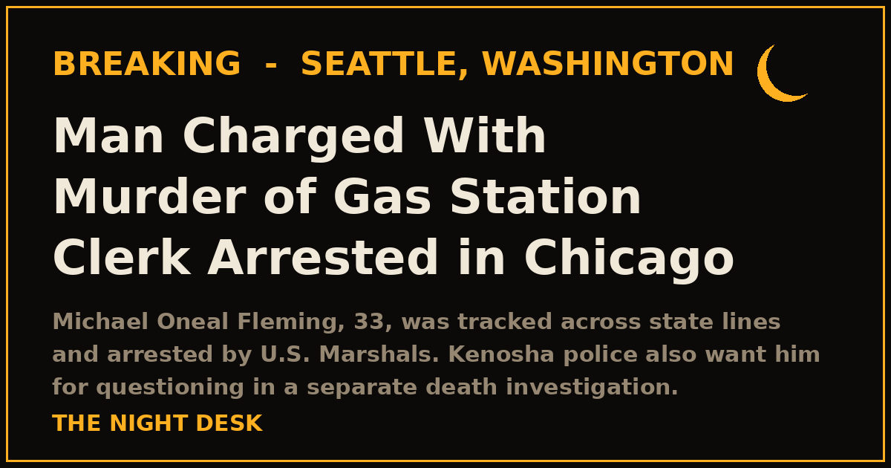

October 21, 2026
Suspect in Seattle Gas Station Clerk's Killing Arrested in Chicago

Headline card by The Night Desk
Suspect in Seattle Gas Station Clerk's Killing Arrested in Chicago
The weeklong manhunt for the man accused of gunning down a Seattle gas station clerk is over. U.S. Marshals arrested Michael Oneal Fleming, 33, in Chicago on Tuesday evening without incident, the Seattle Police Department announced.
Fleming is charged with first-degree murder in the Oct. 13 shooting death of Graeme Dobbeck, 36, at a 76 gas station at 351 Broad Street near Seattle's Belltown neighborhood, according to King County court documents. Prosecutors allege the killing was premeditated.
Walked in, bought a drink, then opened fire
Seattle police were called to the station at 5:52 a.m. on Oct. 13. Officers found Dobbeck — the store's manager for more than two years — behind the counter unresponsive with gunshot wounds. Medics pronounced him dead at the scene; a preliminary medical examiner's finding cited multiple gunshot wounds to his head, face and chest.
A probable-cause statement says security video showed the shooter enter the store, bring a drink to the counter, and fire at least four shots at Dobbeck from close range before walking out. Investigators say there was no evidence of a robbery.
A former co-worker
Police identified Fleming from the surveillance footage — through his appearance and gait, and confirmations from the store's owner and another employee. Fleming had worked at the station and resigned weeks before the shooting, court records say. The owner told detectives he knew of no dispute between Fleming and Dobbeck.
Police had warned Fleming was armed and dangerous and asked the public not to approach him. Seattle and Kenosha police both said he was believed to have been traveling through Wisconsin toward the Chicago area.
Wanted for questioning in Wisconsin too
Separately, the Kenosha Police Department issued a public safety warning on Tuesday identifying Fleming as a person of interest in an ongoing death investigation. Police said he was last seen in Kenosha's northwest section and urged residents to call 911 and not approach him. Authorities have not publicly identified the deceased or any connection Fleming may have to the case, and no charges have been announced in Wisconsin.
Prosecutors in King County have requested bail be set at $5 million in the Seattle case, and his arraignment is scheduled for Nov. 2.
Anyone with information about the Seattle shooting is asked to call the Seattle Police Department's Violent Crimes Tip Line at (206) 233-5000.
This story is developing. The Night Desk will update as the cases progress.
Source: Seattle Police Department Blotter, KOMO News (ABC Seattle), Kenosha County Eye
Source: Seattle Police Department / KOMO News — read the original report
← Back to latest stories